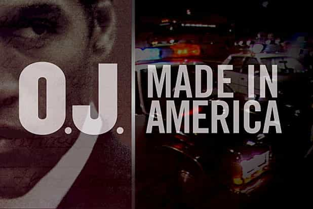
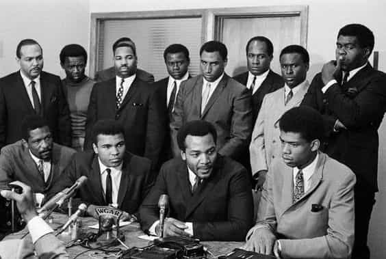
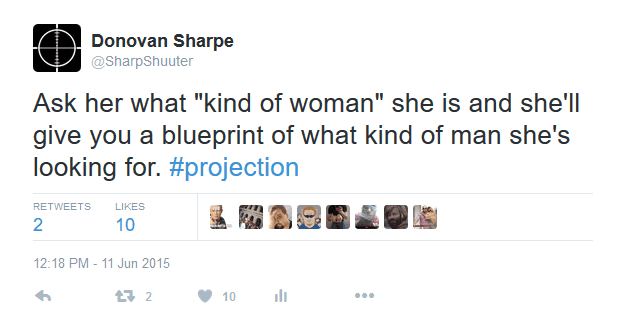
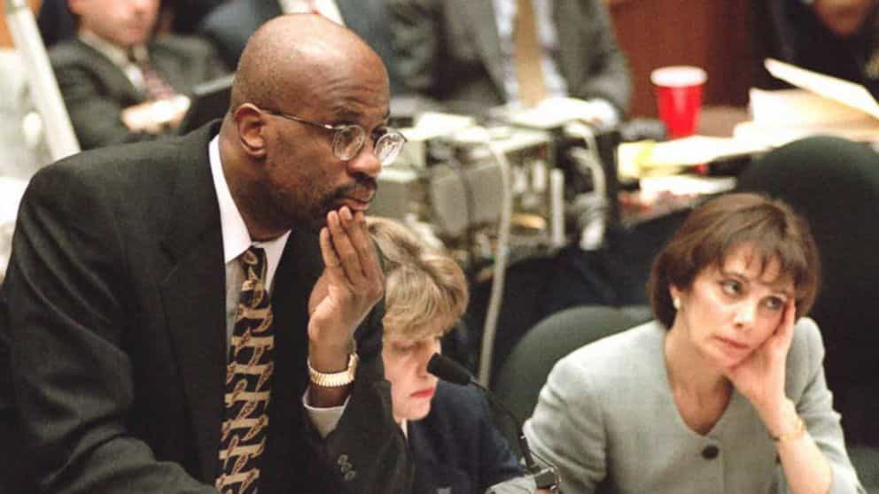
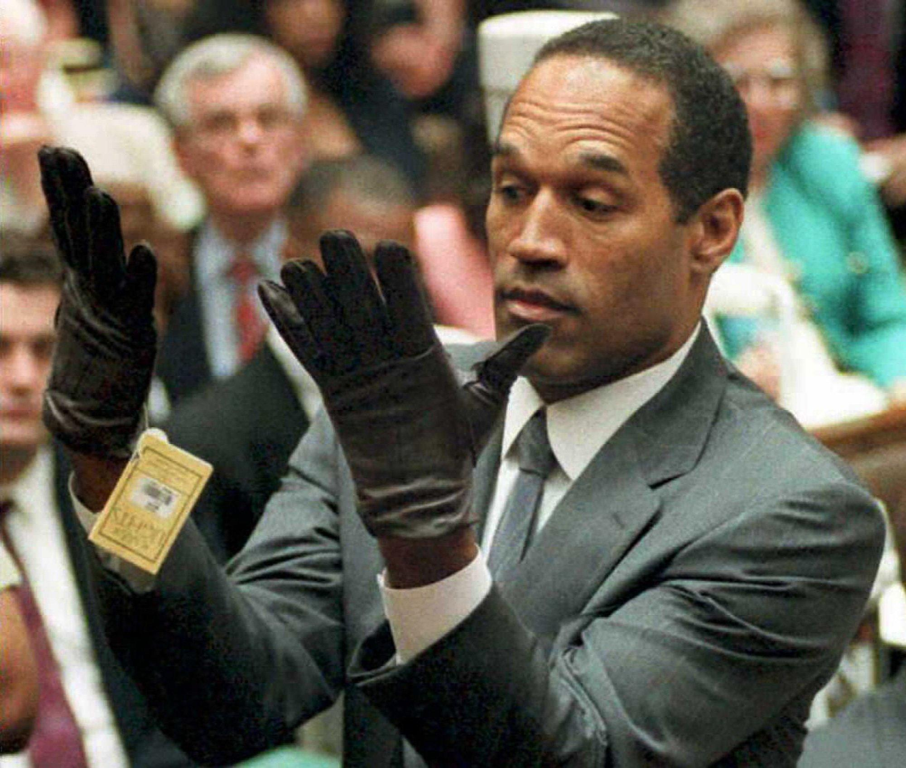
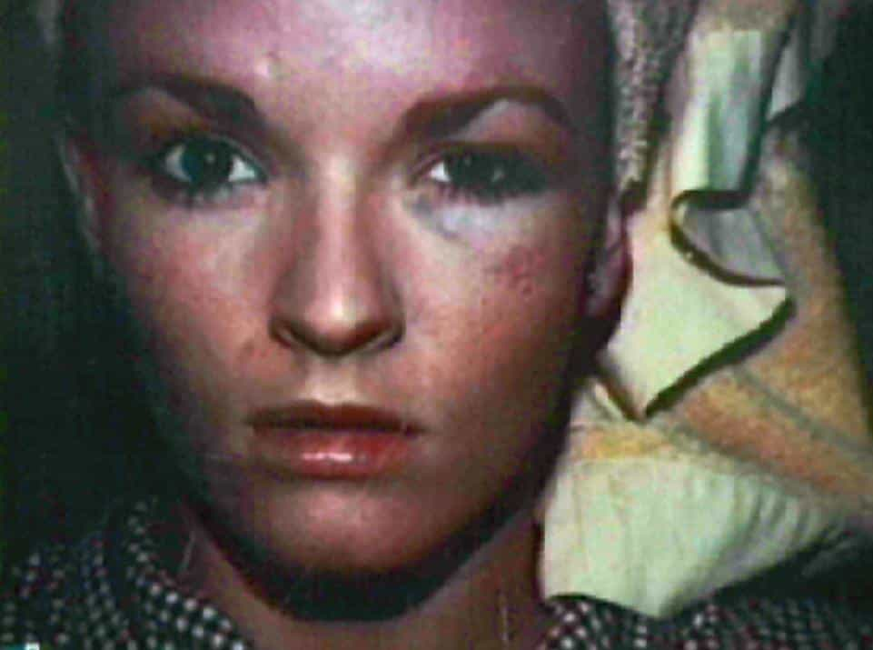
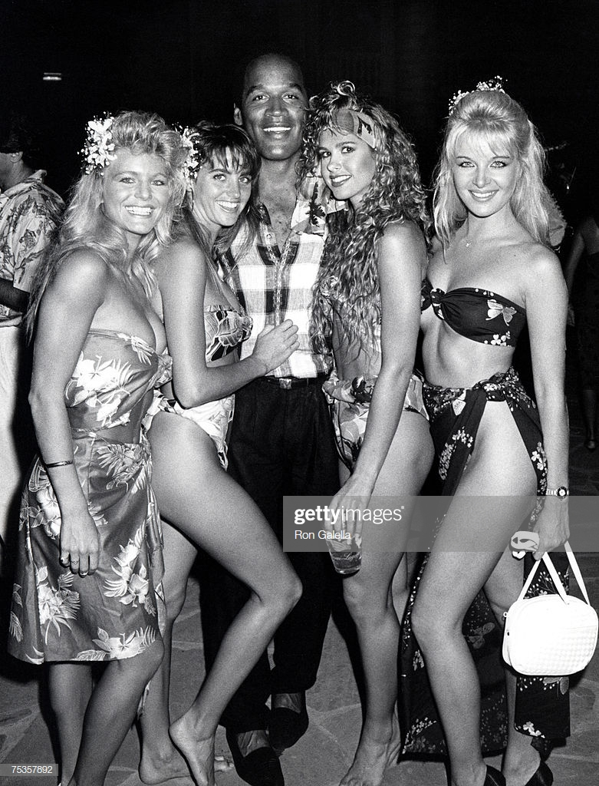
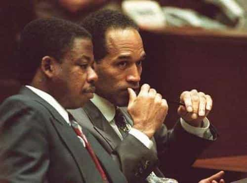
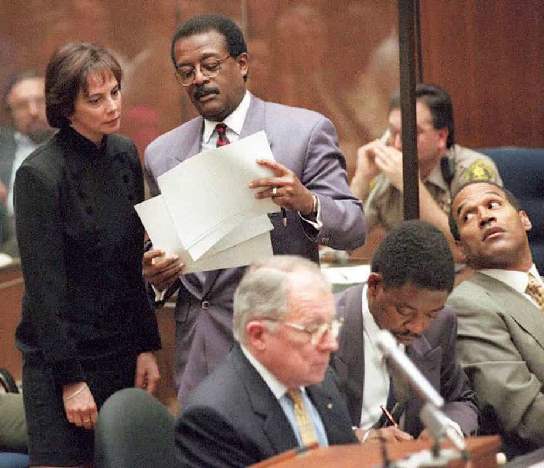

< < < Back
3 Ways The O.J. Simpson Saga Confirms Red Pill Truth – Return Of Kings
Back in early June, ESPN released their most anticipated documentary in their 30 for 30 series, OJ: Made in America, directed by Ezra Edelman. Though it’s been more than 20 years since the trial of the century, the O.J. Simpson saga is still among the most talked about stories to this day.
OJ: Made In America, for my money, is the final word on all things O.J. Simpson. It thoroughly and completely dissects every element of his life from his humble upbringing in San Francisco, to his stardom on and off the football field, to his murder trial, to his current stay in Lovelock Correctional Facility in Nevada.

Seeing the world through the lens of neomasculinity, red pill truth was confirmed at practically every turn of the 8 hour, 5 part documentary. So often, in fact, I had to pause it regularly to jot my thoughts down for this article. That said, here are three ways the O.J. Simpson Saga confirms what we already know here in the ‘sphere.
1. Men hate on men who live better lives than they do
Throughout the documentary the underlying theme that was prevalent in all of Edelman’s interviewees was the fact that his “whiteness” was the main reason for his downfall. Male after male, said things like “Being a sellout out cost him” and “I knew he was lost” were uttered by some of his closest friends and people who followed his life.
This was little more than men being envious of the life Simpson lived. O.J. had it all: Money, looks, and endless supply of women, and a trophy wife to boot. While famous black athletes such as Lew Alcindor, Cassius Clay (who later became Kareem Abdul-Jabbar and Muhammad Ali respectively), and Jim Brown were fighting for civil rights, Simpson was living it up in Hollywood and had no intention of getting involved and it rubbed them the wrong way.

Front row from left to right: Bill Russell, Cassius Clay, Jim Brown, and Lew Alcindor
This isn’t to say that these athletes didn’t have a gripe in terms of being perturbed with O.J.’s choice to distance himself from the civil rights movement. Being put off by a young black athlete reaping the benefits of their hard work without having contributed anything himself is understandable.
But at the end of the day every man is in control of his own life and decides what he will and will not do. A lot of sports fans seem to have this idea that professional athletes have an obligation to speak out on social issues but that’s simply not true. Just because LeBron, Carmelo, CP3, and D-Wade use their platforms to talk about these things doesn’t oblige other athletes to follow suit.
People have always outwardly endorsed the idea that every man can do anything he chooses to and be anything he wants to be. This is exactly what they fought for. O.J. made his choice and because of that choice he lived a much better life than they did and it pissed them and every other black man who suffered during that time off.
So statements like “O.J. didn’t know who he was” or “He was in denial” by Joe Bell, lifelong friend, Danny Bakewell, a civil rights activist, and others are dead wrong. Simpson knew exactly who he was and wasn’t in denial about anything. Furthermore, he sure as hell didn’t care about what people wanted him to be. He was his own man regardless of what people said or thought about him. Any man with red pill knowledge these days acts much the same way and as a consequence, catch the same heat from other men like O.J. did back in his hay day.
2. Girls will be girls and hamsters gonna hamster
Female nature was front and center from beginning to end in this documentary. Let’s get right to it:
Projection
Robin Greer (a post-wall blonde who was prominent in the film), one of Nicole’s close friends laid bare her female nature for all the world to see. There were too many red pill nuggets to count from this chick but one that stood out to me was this statement:
“There was something about Nicole that was almost unattainable to O.J….something that he couldn’t quite control, and I think that was part of the attraction…
I literally laughed out loud when those words escaped her lips. Those in the know (read: neomasculine) know that nothing wets the panties of women more than a man who cannot be tamed, controlled, or kept. Female solipsism leads them to believe that sexual attraction is symmetrical. They consistently show their ignorance in these matters by describing what attracts them to men when talking about themselves or other women. I’ve touched on this in the past:

Blondie here wasn’t fooling anyone…..at least not men who are unplugged. Women love men who are unattainable and they project this attraction by defining themselves or other women in this way.
I will also add that she talked about being cornered by O.J. several times (presumably for sex) but never gave in to his advances. Even if I hadn’t seen the arousal in her facial expressions as she told this story, I still wouldn’t have bought it.
Women will always favor strength
The lead prosecutor for the Simpson trial was Christopher Darden. The DA’s office thought that pitting another black lawyer against the formidable Johnnie Cochran would even the racial odds in the trial.
Darden, by all accounts, seemed to be a solid lawyer but it was very clear from the jump that he was over matched by Cochran and his legal dream team. This was not lost on the jury, which was comprised of 10 women, and 2 men.

Darden and Clark were no match for Team Simpson…and they both knew it.
As most of us know, a pivotal moment in the trial was when Simpson tried on the gloves which, at the time, didn’t come close to fitting. I’m not going to go into the details in terms of what lead to the decision and the aftermath. But when juror #2 summed up the fiasco and what it meant to her personally, she once again confirmed more crimson capsule truth (I’m paraphrasing here).
I can’t believe he [Darden] did it [let O.J. try on the glove]. You let him [Cochran] play you. You were the weaker one. And you didn’t have to be.
She later said she felt sorry for him because he looked weak.

“If it doesn’t fit, you must acquit!”
Females pity weakness but more importantly they favor strength. That’s always the way it’s been and always the way it will be. Darden had enough evidence to lock Simpson up for life but because he, Darden, wet the bed when the pressure was on, the female jurors looked down on him which didn’t help matters in their deliberation.
Regardless of whether a man is a good guy or bad guy, has the truth on his side or not, if there’s no conviction, no strength, and no confidence, not only will women not respect him as a man, but everything they stand for is looked at as a joke.
Females love being owned by aggressive men
Throughout the documentary, Nicole’s friends and family members opined at length about how abusive Simpson was toward her and how possessive he was. The 911 calls and pictures of her bumps and bruises made it clear that their tales of his dubious dealings with his trophy wife were probably true.

Here’s the thing: This is the reason she stuck around for so long. No, I’m not saying she liked getting her ass kicked by her 6’2″ 210lb ex-football star of a husband every other night. But I’ve written before that volatility and aggressiveness are both traits females are attracted to whether they admit it or not:
…when a female is in a physically abusive relationship, there is very little boredom. No, there’s no fun in getting her ass beat, but the adrenaline rush that comes with the unpredictability of her lover’s volatile mood keeps her on her toes and for better or worse it keeps her around.
A couple of the many examples of this truth that stuck out to me was when Nicole “complained” in one of her letters that ‘he [O.J.] hit me when he fucked me’ and when she told an orbiter of hers “I think I like this guy” after she told him O.J. had been ‘forceful with her’ and ripped her jeans.
No, it is not okay to beat your wife for no reason. And no, Nicole didn’t think to herself “Boy oh boy I hope O.J.’s in a bad mood so I can get my ass kicked and call 911 again!” But excitement, whether it be terrified excitement or not, is still excitement. And no matter how much she complained to friends and family members, no matter how many times she called the cops (who, more often than not, didn’t file a report at her request), she was always going to love O.J. His abusiveness and volatility only deepened her feelings.
Few things in today’s sexual climate make women more loyal than the threat of violence, being owned by a man who shows that he can and will resort to violence, and being reminded of that on a regular basis. Nicole Brown Simpson was just another in a long line of women who was no match for her biological programming.
3. Alpha males always live the best lives

O.J. Simpson was a bona fide alpha male through and through. To add to that, he was probably a sociopath who exhibited all three dark triad traits on a regular basis depending on the situations he found himself in. He took what he wanted without apology or remorse, and could charm the panties off of any girl he wanted (one woman described this “phenomenon” as being “O.J.’d).
The O.J. saga is well documented and before this documentary, the public at large probably thought they knew most everything about his life and trial, myself included. But I have to admit that even I was surprised by a few of the stories that were told about him.
O.J. stole his best friend’s girl and made her his wife
The friend he stole the girlfriend from? A.C. Cowlings, the driver of the white Ford Bronco in the most infamous police chase in U.S. history. The story goes that O.J. and his friend Joe Bell were on their way to a party in another part of town. When they arrived at Marguerite’s (A.C.’s girlfriend) house, O.J. instructed Joe to sit in the back seat so she could sit in the front next to him.

Young Simpson and Cowlings
The rest, as they say, is history. O.J. ended up marrying Marguerite, who had 3 of his children. But the fact that the man whose girlfriend he stole ended up as a ride or die comrade is what separates Simpson from most men. Dudes steal their friend’s women all the time. It’s not right but it happens. But to then turn that man into your closest ally to the point where he drives the getaway vehicle for you as a fugitive of justice is rare indeed.
There was also a story where A.C. jumped in front of O.J. to shield him from a friend pointing a gun at him (supposedly a joke) and said “If you want to shoot O.J., you gotta shoot me.” Simpson’s infectious personality affected both men and women alike and he was well rewarded for it.
O.J. claimed Nicole as his property before she even knew him
According to an acquaintance, O.J. was with a friend at an exclusive club in Hollywood when a drop dead gorgeous 18-year-old blonde who was waiting tables there caught the eye of the ex football star. Not 10 seconds after she crossed their paths he looked at his friend, pointed to Nicole and said:
I’m gonna marry that girl!

O.J. knew he’d have her the moment he saw her
At the time he was still married to Marguerite but that didn’t matter. He saw what he wanted, claimed it, and made it happen. This is what alpha’s do day in and day out.
Unbreakable Frame
After he was acquitted for double murder, Simpson foolishly thought he would just move back into his Brentwood mansion and be loved and accepted back into the community as though nothing ever happened. Unfortunately for him, this was not the case.
People heckled him at golf courses calling him a murderer, holding up signs, and insulting him loudly. Anywhere he went he was ridiculed and persecuted by just about everyone. But through it all, as a friend said, he acted like he didn’t even hear or see it.
Call it denial, call it coping, call it whatever you want. But the red pill truth is that O.J. simply maintained frame. I’m sure it wasn’t easy and I’m sure there was a lot more happening beneath the surface than people saw as they hurled insults at him. But that’s the point. No matter what’s going on inside, never let ’em see you sweat. Simpson didn’t.
Eventually he would move out of Brentwood because the IRS seized his home but no matter what people said to him or about him, his demeanor was as stoic as a statue. That is the very definition of rock solid frame.
He was instrumental in his own defense
Carl Douglas, an attorney on Simpson’s legal team, regales us with a story about how O.J. took him aside after Douglas cross examined someone from the prosecution, looked him in the eye and said “Wipe that spit off your mouth!” Douglas obliged.

Douglas taking instruction from Simpson
According to Douglas, Simpson was in charge and made it clear early on. He’d tell his attorneys what to wear, how to wear it, which jurors to key on, and just about everything else. He was a control freak to the highest degree. He likely knew very little about the law, yet, he had no qualms with asserting his dominance over the men who literally had his life in their hands.

Simpson was keenly aware of everything
Anyone who watched the trial and observed O.J. mainly saw him sitting stoically and watching the proceedings. Little did we all know that he had complete control over his lieutenants and was pulling the strings behind the strings. One might argue he had almost as much to do with his acquittal as his legal swat team did.
Was O.J. guilty?
No. He was acquitted by a jury of his peers.
A better question would be: Did he do it? You know it, I know it, and O.J. knows it. All of the evidence pointed to Simpson and only Simpson as the killer. I talked about this in a column last March:
Let’s face it. They had O.J. dead to rights. All the evidence pointed to his guilt (except for these) but because of the exploits of Mark Fuhrman, an obviously tainted jury pool trying to “make up” for what happened to King, and the best criminal defense lawyer money could buy, Simpson walked.
Anyone who doubts whether or not he killed his ex wife and her friend even before watching this documentary is lying to themselves. People wanted him to be not guilty….and he wasn’t. That doesn’t mean he didn’t commit double murder and get away with it…
…which is exactly why this confirms, yet, more red pill truth. Simpson was rich, which allowed him to hire a legal team that used the race card in the perfect city to do it in, at the perfect time just two years after the Rodney King incident, and was the beneficiary of an obviously biased jury pool (one of which was a former member of the black panthers who stood in the jury box and raised his fist in declaration of ‘black power’ after the verdict was read). In addition to an inept prosecution and racist cop who was made the focal point by the defense, it was the perfect storm that allowed O.J. to get away with murder.

This guy was made the villain and didn’t help the prosecution
What’s this have to do with the red pill you ask? Simple. Simpson should have been convicted. But he wasn’t. Women should be attracted to good, honest, men, who don’t abuse them, and take good care of them while giving them respect and providing them with a good life.
But they don’t.
What should be and what actually is are two very different things and the O.J. Simpson saga shined a bright light on what most of us here already know.
Read Next: 3 Reasons Women Stay With Abusive Men